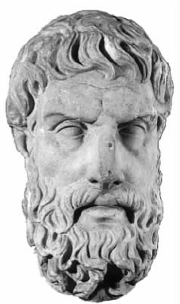
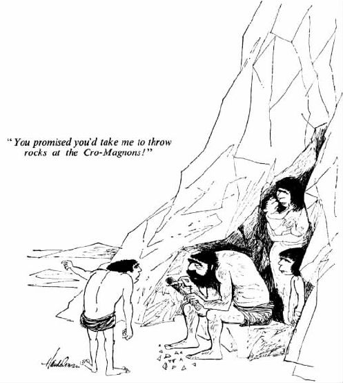

前面所举三例谈到了一些根本的主题，这些主题所涉及观点的重要性超越了任何单个文本或与之相关的任何单个流派与时期。接下来，我将挑选其中六个进行重点介绍。一个问题的提出以及（也许还有）回答有其特定的历史语境，那么这个问题在何种程度上能被视为是名正言顺地从其特定的历史语境中抽象出来的，这本身就是个哲学问题，而且并不简单。在本章结尾部分我将谈到一些这方面的问题。
千万别被标题吓坏。这不过是关于结果决定事情好坏的一种学说的名称。在《格黎东篇》中，正如我们所看到的，苏格拉底在权衡采取不同行动可能带来的不同后果，即给他的朋友、孩子以及他本人带来的结果。当然，同时也有对过去发生的事情的考虑，而不是对将来结果的考虑：他过去的行为意味着他现在要对国家履行职责，这就要求他服从裁决并接受惩罚。在那章 [1] 的结尾我曾建议：哲学家们想要解决我们的道德问题，首先必须使我们相信道德问题实际上没有看起来那么复杂。其中的一种努力就是提出后果主义：没有 任何道德上的理由是向前看的，合适的道德上的理由都是看我们行为的后果。
因此后果主义的观点是，如果某事带来好的结果，这件事就是好的，如果带来坏的结果则是不好的。但是，你马上会注意到这并不能说明多大问题；我们仍然需要知道什么样的结果是好的，什么样的结果是坏的。仅仅重复公式（声称：结果是好的因为这个结果自身会带来好的结果）不能让我们更进一步。一个后果主义者必定愿意提出一些其本身 就是好的事情或事态。这样，好并不在于拥有好的结果——好的就是好的。其他事情好只好在这些事情最后引发了它们——那些本身就是好的事情。
这就意味着后果主义并不是指某种单一的伦理学说，而是一种宽泛的学说。什么被认为是本身就是好的事情，后果主义就以什么样的形式出现，不管其具体形式如何千差万别。如果你认为唯一一件本身就是好的事情是快乐，那么你的生活就与那些认为唯一一件本身就好的事情是知识的人决然不同。因此，即使我们都承认自己在伦理上是后果主义者，我们之间一致的东西还是几乎没有。
到这里你可能会疑惑为什么我们要排除其他一切：为什么不能让各种不同的东西——比如仅举快乐、知识、美和爱几项——同时都是本身就是好的？这听起来非常合理。但是如果我们想要的是一种让我们很容易就能决定自己应该做什么的道德理论，这样做就朝错误的方向迈进了一大步。一旦我们同时考虑一个以上的基本价值观，我们必定会发现这些价值观有时会互相冲突。我可能常常会处于提倡一种（即做那些会带来那种 结果的事）或另一种价值观的情况，但不会同时 提倡两种价值观。那么我应该选择哪种价值观呢？如果苏格拉底必须在拿朋友的生命冒险与影响孩子的教育之间选择，他应该选什么呢？幸运的是他不用在这两者之间选择！如果我们能够只坚持一种基本价值，并用是否能带来这种基本价值去衡量所有其他事情的好坏，那该多省心呀。
那么，存在此类关于伦理的理论也就不足为奇了。其中出现较早，也是非常值得一读的是伊壁鸠鲁 [2] （前341—前271）的理论。伊壁鸠鲁和他的追随者们认为，唯一一件本身就具有价值的事是快乐。不要认为他跟你说快乐就是指纵欲狂欢、美酒宴会，并时不时在私人岛屿的沙滩上休憩。他所说的快乐根本不是指这些，而是指没有痛苦 ，无论是在肉体上还是在精神上。他认为，这种完全无忧无虑的状态便是最快乐的状态。我们听到快乐一词马上想到的却与此完全不同，而且并不比这让人感到更愉快。伊壁鸠鲁似乎曾经机敏而充满智慧地为他的这个观点，以及他提出的如何达到并保持这种理想状态的建议而辩护。我说“似乎”是因为我们几乎没有看到伊壁鸠鲁亲笔所写的作品。尽管他著述颇丰，但我们对他的了解基本来自后人的描述。
另一种此类理论比较现代也更易理解，是由约翰·斯图亚特·密尔 [3] （1806—1973）在他那篇著名的《功利主义》中提出的。在文章中，他将伊壁鸠鲁列为曾对自己产生影响的哲学家之一。密尔宣称唯一一件本身具有价值的事就是幸福——他给幸福下的定义是“快乐并且没有痛苦”（尽管他并不像伊壁鸠鲁那样认为远离所有痛苦本身就是最大的快乐）。但是密尔的观点与伊壁鸠鲁的观点有一个重大区别。伊壁鸠鲁似乎更关心为人们提供建议，使其最大限度地获得他们自己 的快乐或平静，而密尔是个社会改革家，他的伦理原则旨在提高所有人 的生活水平（即幸福）。（佛教发展史中同样也有类似的分歧：最高理想是个体得到涅槃，还是让所有的人，包括个人自身在内，都得到涅槃？）伊壁鸠鲁主义声称：“得让每个人都设法远离痛苦和焦虑。”虽然再加一句可能会更好：“帮助身边的人远离痛苦和焦虑也许能帮助自己也远离痛苦和焦虑——如果确实如此，帮助他们吧。”相比较而言，密尔的首要目标更宽泛，就是获得幸福。因此所有人的幸福和你个人的幸福一样，都是你的目标，一个人的幸福与任何其他人的幸福一样，具有同样的价值。

图8不列颠博物馆中伊壁鸠鲁的大理石头像。
密尔的抱负超越了他自己所处的社会——他甚至还在作品中写过要改善全人类的状况。这是典型的维多利亚时期，即处于巅峰时期的大英帝国公民的做法（密尔本人曾为东印度公司服务三十多年）。但是，把密尔看成是企图干涉他人道德观念的帝国主义者是不公平的。他并不想告诉别人怎样才能得到快乐，而只想告诉大家人人都应该获得物质资料，接受教育，并拥有政治自由和社会自由，从而用自己的方式获得属于自己的快乐。许多人会因为密尔的基本伦理原则中的普遍情怀而心生敬意。另外一些人则可能会怀疑要求人类的道德关怀针对所有人，范围如此之广又如此不偏不倚，这是否现实。我们能做到吗？如果我们的确试着这样做，生活会是怎样？
这些问题，尤其是第二个问题，使一些哲学家认为密尔的学说与另一种价值观冲突，这种价值观几乎在所有人看来都很重要。在《格黎东篇》中，我们已经发现这种价值观起作用了。
你应该记得，对苏格拉底影响很大的一件事是他在接受审判时选择的那条道路。既然他在获得机会选择死刑以外的其他处罚方式时就明确拒绝了流放这种方式，那么现在他怎么还可能再选择流放呢？“既然命该如此，我就不能抛弃自己先前的主张。”作为一位战士，他在法庭上说，他会直面死亡，而不是错误行事；他不会仅仅为了延长自己的生命而做在自己看来是错误的事。
这些思想抓住了正直这种美德的中心内容。正直意味着完整一致 [4] ，正直作为一种价值观意味着生活应该是完整的而不是一串互不关联的片段。因此正直要求坚定不移地遵守原则，坚守自己的观点，除非出现新的理由或证据。与此相关（这同样也适用于苏格拉底），正直还包括坚持不懈地追求那些已选定的能够赋予生活目的和意义的事业。另外，正直还将自我欺骗、虚伪这些与人自身产生这种或那种抵触的内心状况排除在外。
那么正直的理想在何种程度上才能与密尔的功利主义一致呢？有人认为两者没法达到完全一致。因为不管过去你多么坚持某个原则，这一事实本身并不能给你任何理由现在继续坚持——如果我们认真而平实地对待密尔的处境的话。如果过去你坚持这个原则一直都能得到满意的结果（用幸福程度来衡量），那么这一事实 至少可以给你一定的理由认为，继续坚持这个原则还能得到满意的结果——这正是 现在继续坚持这个原则的一个理由。但是不管你多么坚持这个原则，不论它在多大程度上已经成为你人格的一部分，坚持原则本身并不能成为理由。反对功利主义的人质疑我们是否能够真正带着这种思维方式生活。
你可能会怀疑功利主义者在面对这种质疑时是否能够为自己辩护。如果不能，那么不仅仅是对功利主义者，对于其他类型的后果主义者来说，情况看起来都是糟糕的。因为在这最后一段，以快乐为标尺来衡量结果的好坏已不重要。如果有可能，我早就在不影响陈述观点的前提下选择其他因素而不是“快乐”为标尺。因此，这样做实际上是对后果主义的一个攻击，而功利主义只是后果主义的一种。所有认为这种攻击能驳倒后果主义的人都必定会接受这样的说法——行为的结果（至多）只是其价值的一部分，而要决定这个行为的好坏大概需要你主观地在全然不同的各种因素之间进行权衡。
国家要求其成员履行某些义务，这种要求如果来自个人肯定会引起强烈的反感。比如，纳税即是如此。为什么国家可以将我自己的部分收入拿走，而个人即使只是有这个企图，也会被判犯有勒索罪或是“威胁他人以获取钱财罪”？是不是国家只是侥幸逃脱了——显然国家才是我们身边最大的威胁？
现在的大部分政治理论家都认为国家的确拥有一些合法权威，但是这种权威究竟有多大还没有达成一致意见，换句话说，就这种权威在合法性边界内能扩展到什么程度这个问题而言，很少有一致的意见。实际上存在着各种各样的意见：极权主义的观点赋予国家权力，使其凌驾于个人生活的方方面面；权力最小化的观点则认为国家只需为保持国内和平、确保各成员之间订立的契约得到实施做一些必要的工作即可，除此之外几乎无他。但是除了极个别将国家权威置于标尺最末端（认为“国家根本不具有任何合法权威”）的人之外，每个人都面临以下问题：这种使国家凌驾于个人之上的权威是如何产生的？
其中一种答案历史悠久——在《格黎东篇》中我们已经读到了这种答案的一个版本，它认为这种权威源自个人与其所属国家之间订立的契约或协议。这是一个很自然的答案。一个人会同意并承认另一个人（在某个行为领域）拥有权威，因为他发现这样做（自己）能获得很大的利益，对这种利益进行回报亦然。大部分人会接受这样一点：只要在协议范围内，并且只要这个协议是自愿签订的，该协议便会使他人对自己行使的权威合法化。尽管这种答案很自然，但它并非唯一值得我们思考的答案。另一种答案认为强者理所当然拥有凌驾于弱者之上的权威；只要 其行使是为了弱者的利益，这种权威便是合法的。打个比方，这就很能说明为什么父母能对幼儿施行权威。但是如果我们让弱者来评判自己是否从中受益，便相当于在说只有得到弱者承认，这种权威才是合法的。这样我们便回到一种类似“默认”的理论，正如雅典城邦和法律用来反对苏格拉底的理论一样（见前面第22页）。我们或者承认是强力使权威合法化（“强者即权威”），或者承认是上帝赋予某些人或机构权威（“王权神授”），否则很难避开这样或那样的契约理论。
根据对“谁与谁订立了什么契约”这个问题的不同回答，契约理论有几种不同的表现形式。既然我们在谈个人对国家所负的责任，我们可能会设想每个人作为个体一定都应该受契约约束（这似乎就是苏格拉底在《格黎东篇》中所表现态度的大致意思）。不过有些理论家在作品中认为前人或是社会的创立者才应该受契约约束，似乎这样就足够了。不过，先抛开上面这个问题不说，契约的签订是针对整个社会的吗（因而你也签订契约同意与整个社会集团的决定保持一致，因为你本人也是这个社会集团的成员）？或者契约是与某个或某些拥有至高无上权力的人签订的，而你是效忠于这些人的？你会发现这会在宪法方面造成巨大差别——从社会民主政体到君主专制政体。
那么究竟什么是契约？在什么情况下个人能够正当认定契约已经终止？托马斯·霍布斯（1588—1679）著名的契约论（在第八章我们还将再次谈到）认为参与契约的个人能合法要求的唯一好处是他们的生命受到保护，因为政府结束了未制订契约前的那种谋杀泛滥、偷窃成灾的无法律状态，并在受到攻击时组织人们进行自我防护。如果得不到这点好处，那么一切都免谈；反之，个人就得无条件地接受契约约束。
伊壁鸠鲁说过一句相关的话：“一个人如果知晓如何有效应对来自外敌的威胁，必然会尽可能将身边所有的人组成一个大家族。”甚至霍布斯也赋予家族某种天生的豁免权，认为其可以置身一切人反对一切人的战争之外。在危难时期，家族作为一种组织最有可能团结在一起，是合作与忠诚的最佳典范。（有些读者可能认为这种观点已经过时——不过他们这样想也许是因为他们的生活比较舒适，或者说他们所在的地区生活比较舒适。）柏拉图曾为理想国家下过定义（见《理想国》），他实际上将家族排除在外——毫无疑问他见过太多的以家族为单位滋生的阴谋以及腐败。家族内部存在大量凝聚在一起的小团体，这必然会威胁到国家的权力及其保持和平的能力。如果需要有家族存在，那么最好只有一个——伊壁鸠鲁的话就表明了这一点，而国家（回头看《格黎东篇》50e及其后内容）应被看作是所有人的父母。
如果具备一定的推理能力，那么你已经拥有理性。这种推理能力即在知道一定的真理之后，推断出如果这些真理的确为真，其他还有什么也可能是真的；也许还要推断出这种可能性有多大 （尽管这样做需要更大的理性）。休谟在《论奇迹》中说智者根据证据的多少来决定自己信仰的深浅，理性就是这样一种大脑所具备的品性。
然而，形成正确的信仰并且恰如其分地相信其正确性，这并不是理性的唯一表现。一种熟悉的情形是当你想知道某件事是真实还是虚假（“这件事是管家做的吗？”“家里还有面包吗？”）的时候。这时，如果你已经获得了理性，理性就会展现在你的信仰中。同样，理性也会体现在你所寻找的证据中，而且在后者中的体现绝不比在前者中少。除了调查权之外，我们还拥有进行理性选择的能力：有需求就采取行动，使需求有可能得到满足。而且，虽然还有争议，但是我们的推理能力有时还具有另一个功能：如果 我们拥有目标，理性并不仅仅告诉我们应该做什么，而且还告诉我们应该设定什么样的目标。这个棘手的问题有两种答案，每种答案都有一位重量级代表人物：康德断言推理能力的确能做到这些，而休谟则否认这一点。（我个人认为，休谟及其拥护者稍占上风，尽管争论还在继续。）不过本章中我们还是继续关注信仰和证据的问题。

图9家庭之外，什么事情都有可能。这就是霍布斯所说的自然状态吗？（图中文字为：“你答应要带我去朝克罗马农人扔石头的！”）
信仰某事就要有证据，或是要能为之提供理由。为什么我们要关心这两点呢？因为如果能找到证据，信仰正确的可能性就更大，我们也会更加确定自己的信仰是正确的。这两点都很重要。我们希望自己的信仰是正确的，因为信仰指导我们的行为，而在正确信仰指导下的行为总的说来更可能获得成功。（两个人都想要一瓶啤酒，其中一人错误地认为啤酒在冰箱里，另一人则认为啤酒还在车上，后者的想法是正确的。比较一下他们的行为以及他们成功得到啤酒的几率。）相信自己的信仰正确并坚持信仰，这样事情更容易成功，因为在这种情况下，我们根据自己的信仰行事，不会犹豫不决。
这些都是现实生活中的问题，是在任何时候都可能影响我们所有人的问题。另外还会有一些理论问题，关注的是我们在哲学中的自我形象：我们（在某些历史时期是我们中的一部分人）可能会从根本上把自己看作是理性的动物，认为在我们的生活中理性起着绝对重要的作用。长期以来，哲学家们都认为理性是区分人类和其他动物的重要特征。（在紧靠《论奇迹》之前的《论动物的理性》一文中，休谟就反对这种观点。）
理性在人类生活中起着绝对重要的作用这个观点十分含糊，因此它不属于那种能够被证实或完全驳倒的观点，尝试去证实或反驳是不明智的。不过还是可以讨论许多与之相关的内容。
第一个要讨论的是古希腊怀疑论中为人熟知的内容。假设你相信某事（称之为B），你问自己为什么要相信这件事。然后你开始寻找理由（称之为R）。这个理由R不能是你仅仅凭空构想出来的。你必须有理由相信它是真实的，这样它才能给你理由相信B是真实的。这个进一步的理由不能是事情B本身，也不能还是理由R（否则就是用相信某事来证实某事本身的存在，这似乎就相当于只是在重申这种信仰，即通常所说的“以未经证实的假定为立论根据”），而应该是其他——就这样重复同样的辩论。这就意味着信仰某事须有理由这一观点只在局部范围内站得住脚，一旦尝试从更大的范围考虑，该观点就无法成立：这些“理由”其实是由其他一些我们找不到理由的信仰衍生而来。为了圆满解答这个问题，已经产生了一个完整的哲学研究领域，即认识论，或称知识理论。
要补充一点：一些最根本的信仰，即那些我们赖以生活的信仰，是很难找到合适的理由的。举一个人们经常讨论的例子：我们总是相信事情会像以往一样继续，比如下一次呼吸不会让你窒息，迈出下一步地板不会塌陷，还有成百上千件其他类似的事情。我们凭什么相信这些呢？不要回答说这种类型的信仰几乎总是正确的。的确如此，但是这仅仅只是关于发生在过去 的事情的一个例子而已，而我们想知道的是为什么我们期待将来事情也这样发生。
因此，如果我们认为人类的信仰可以变得彻底理性、完全透明、容易理解，或者说人类只要依靠推理就能生活，我们就会面临巨大的阻碍。但是人类的推理能力，即通过以往的信仰推断出并获得新的信仰的能力对我们来说至关重要，这一点是一直不变的。没有这种能力，除了躯体的形状之外，我们就没有什么可被称之为人的东西了。打个比方，一只普通的猩猩也比我们强。而实际上如果我们真的没有这种能力，猩猩也的确比我们强。
第四章介绍了佛教中的“无我”学说。无我学说认为人不是一种单一的、独立持续存在的东西，而是一种复合体，一种由“五蕴”组成的、容易被化解的复合体，“五蕴”本身就是复杂的物体或情状。不过我们得出结论，认为自我实际上完全是由独立的物体聚在一起组成并且极不稳定，这并非仅仅受这种佛教传统观念的影响。另一种对我们产生影响的传统观点在现代西方被称为“心灵束理论”，这种理论几乎总被认为是由休谟提出的。（不过在笔者，即你们的哲学向导个人看来，很难肯定休谟的确是这么认为的，只是在这里我会绕开这个有争论的问题。）
因此，假设有一种单一的、独立持久存在的东西——你；只要你存在，这种东西就不变。这种东西在哪里？审视你自己的大脑，看看是否能感觉到这种东西。你首先会发现自己正在体验形形色色的知觉：视觉使你看到了周围的事物，听觉让你听到了周围事物的声音，也许还闻到一些气味；如果触摸旁边的物体，还能感觉到物体的反压力，物体的粗糙、温暖以及其他类似的感觉。然后还能感觉到一些肌肉在用力，身体在运动。所有这些感觉随着你自己位置的变化，以及周围事物本身的变化而不断变化。你也许还能感觉到脚微微有些疼，或者是额头有些疼；你也许还感觉到自己思绪的发展，可能是一组意象，可能是脑海里一系列零散、无声的句子。但是在所有这些千变万化、多姿多彩的复杂知觉中没有“自我”这种东西不懈坚持的痕迹。
那么为什么还要假设存在这种东西？这个，有人会说，很明显所有这些 经历，即我的 经历，在某种程度上属于一个整体。此外还有其他的经历，这些经历属于你 但不属于我，这些经历同样组成一个整体，不过不是我的这个 整体。因此肯定有一样东西，我，我的自我，拥有所有我的经历，但是不拥有任何你的经历。还有另一样东西，你的自我，拥有所有你的经历，但是没有任何我的经历。
支持知觉束理论的人回答说上述理由不能成立。要将自己所有的经历聚集在一起，并不非得是这些经历可以替代其他东西这样一种关系，也可以是某个关系网络，在这个关系网络中，所有的经历都可以互相 代替（但是这些经历不能替代任何他人的经历）。试想许多碎纸片因为被钉在一起而形成了一个整体（自我为中心的模式），再试想一堆铁屑被磁化后互相吸引，因而形成了一个整体（束理论的模式）。
你可能已经发现上述观点（休谟1738年出版的《人性论》第一卷第四部分第六节反映出来的观点）与第四章中《弥兰陀王问经》作者的佛教观点有相通之处，但是两者也有区别，其中最根本的区别在于两者看待身体的态度。佛教毫不犹豫地认为身体（“物质形式”）是构成一个人的五蕴之一，而18世纪时休谟的观点则甚至懒得将身体排除在外，完全忽视了身体的存在。休谟作品中先是用了“自我”一词，然后用了“自我或人”的说法，后来又用了“思想”一词，似乎这三者显然是一样的。因此在休谟看来，“什么是自我（或人）？”与“什么是思想？”不过是用两种不同的方式来问同一个问题。这就是数个世纪以来宗教观念引发的思潮变迁。这种宗教观念深受柏拉图和新柏拉图主义的影响，关注灵魂和精神的东西，同时又贬低身体的东西。
还有一个重大的差别。面对一种哲学思想，质疑接下来会发生什么事情，即这种思想的支持者意欲何为，总是一件好事。我们看到，佛教徒是本着一种伦理的目的。“无我”理论会让我们生活更幸福，远离“罪恶之事”，更成功地躲避苦难。而休谟的目的完全不同，他的目的与伦理毫无关系，更多的是关于我们现代所说的认知科学。如果我们没有感觉到持续存在的自我，那为什么我们还能相信自己每天都是同一个自己呢？休谟提出了一种心理学理论来解释这个问题。（这种理论按照现代的标准来看相当幼稚，当然这并不让人感到意外。）
我们并不是在用两个人来代表两个时代。但是那先比丘所处的年代是求生存的年代，而休谟所处的年代是求科学的年代。既然两个时代的背景存在这样的差别，那么虽然两种思想很接近但所起的作用却大相径庭也就不足为奇了。这就直接引发了我们的下一个主题。
柏拉图与霍布斯生活的年代相隔两千年，两个人的出身不同，生活环境也不同，他们谈论的的确是同一件事吗？现代哲学家关于自我的提问还可能与休谟一样吗？更不用说比休谟更早的佛教徒呢？我们谈论哲学问题但并不提及问题的提出者以及提出年代，这样就能使这些问题成为永恒的话题，使任何一个年代的思想家都能谈论吗？这种想法在现代根本不可能流行。我们反复听到这样的话：所有的哲学思想都是“受环境影响”的，与思想家们当时所处的历史、社会和文化环境密切相连。
我当然不想建议大家相信一些永恒的问题一直存在，等待有人发问。但是，认为不知道发问者是谁就不存在任何问题或答案，这种观点也许更差，至少不比前面的观点好。这种极端的观点之所以吸引人，原因之一是它们很简单，带点“哦，是，是的——哦，不，不是的”这样的哑剧风格。真理往往位于中庸地带，而且比极端的观点更为复杂。你可以从多个角度切入这个话题，但是我选择这个角度：认为一个去世已久的人的观点为现代的论争作出了贡献，似乎这个观点就是在此时此地向我们提出的，这样做合理吗？我想是合理的，而且我甚至还有理由认为我们应该如此看待。但是我们同时还要谨慎，最重要的是关注我们可能错过的东西。
没有什么能阻止我们从古老的文本中抄袭某个句子，看看这个句子今天是否能为我们所用。如果我们还想抄袭其中反映的思想 而不仅仅是句子，那么我们大概需要花点工夫来判断这个句子的意思是什么。如果我们不打算如此，那就不要期待从中得到太多，当然也就不能贬低这个句子的作者。但是尽管刚刚才讲到要避免做一些事情，我们往往还是发现这些事与我们关心的事有关，因为许多哲学思想都源自关于人类和人类生活的稳定不变的事实——不管怎样，在过去的三千年里这些事实都没有很大的改变。
发现某事与自己相关是一回事，发现某事让人信服又是另一回事。假设我们认为柏拉图的观点和霍布斯的观点都不够充分，不足以赋予国家无上的权力；这种假设有合理的地方：毫无疑问他们的论点不够充分。但是如果我们随后就放弃，将我们与他们之间的事情放在一边，我们就可能犯一系列错误。
其中一个错误是，尽管我们可能理解他们的作品，但我们并不理解他们本人 ——他们对需要怎样的政治思想这一点的关心，什么样的环境引发了他们的关心因而使得出的结论吸引他们自己。我们可能会因此忽略文本背后的人性，同时也会忽略另一个重要因素，即哲学是为了什么。而且任何时候如果无法确定他们的意思，弄清他们为何会这样说往往是解惑的一种有效方法。不关注他们的目的和动机，理解他们的话就可能有困难。
另一个错误是，如果我们不注意作品产生时哲学家的智力状况和情感状况，我们对其成就的理解就会受到严重阻碍。前面我就提出把哲学视为人类在感到困惑时回望来路的一种尝试。哲学可不是故事，对哲学家们所处的环境没有一定的了解就无法理解他们的哲学思想。
所以“这样对吗？”肯定不是我们应该思考的唯一问题。同样，仅仅因为这些哲学家生活的年代久远就全然拒绝质疑他们所说的是否正确、质疑他们的论点是否有说服力，也是不对的。毕竟柏拉图并不认为自己仅仅是为了那个时代、那个国家而撰写作品。相反，他一直努力将我们的注意力从暂时的东西转移到他认为是永恒的东西上来。如果没有认真尝试加以评判就否定柏拉图的那些进一步的雄心壮志，似乎就过于傲慢了（或者也许是自我保护？）。“你瞧，你瞧，他设计出他理想中的国家了吗？多聪明的小家伙啊！”
我希望现在你已经开始注意到一些鼓舞人心的事了。哲学著作也许浩如烟海，让人望而却步，但是真正的哲学主题却并非如此。我们承认，相对于这本薄薄的小书的篇幅来说，哲学这个话题是太大了些，但也并非大到让人无法入手。两千年间，我们在伊壁鸠鲁和密尔之间，在柏拉图和霍布斯之间，在休谟和《弥兰陀王问经》一书的作者之间，都发现了相通之处。问题并不在于熟悉这些重复出现的主题，而在于当不同的哲学家为了自己的目的用自己的方式阐释这些主题时，对他们思想的差别要有敏锐的洞察。这句话的意思是一个人对哲学的理解是日积月累起来的，而且可以积累得相当快。这对你们来说肯定是个好消息。